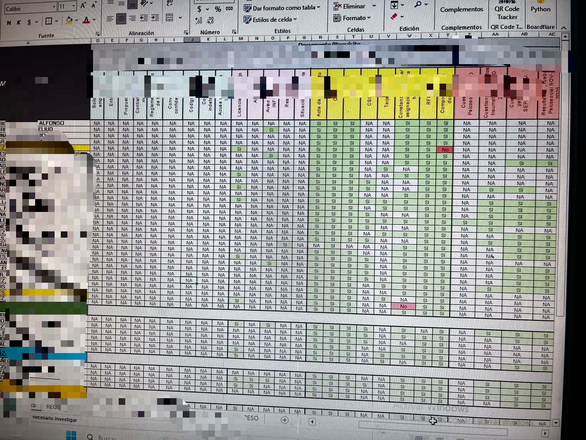
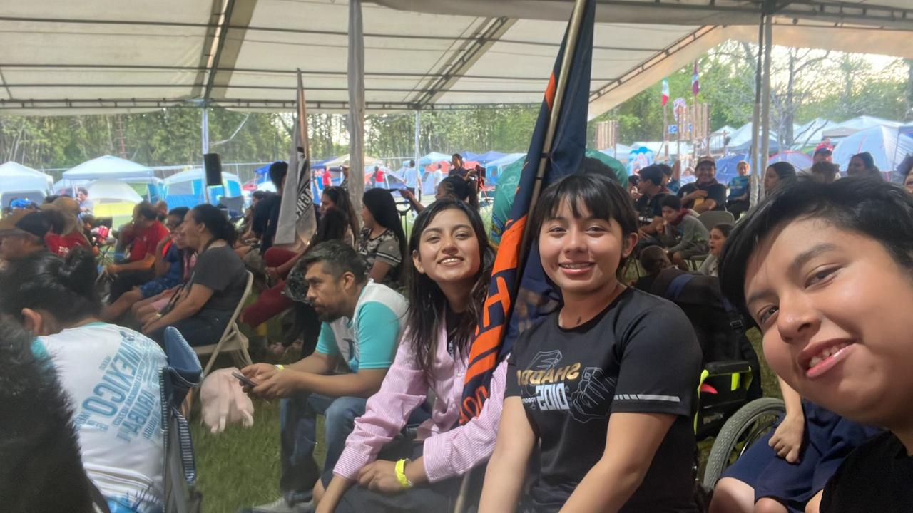
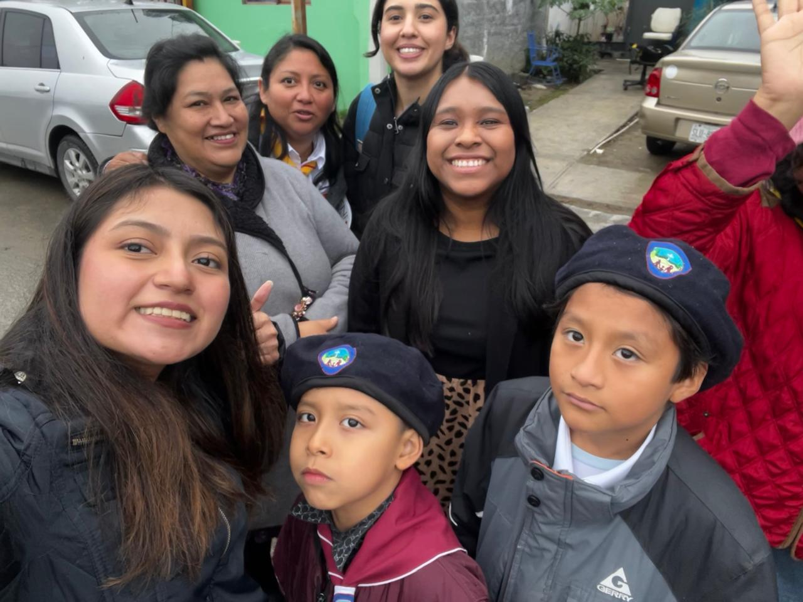

Reflexión final
Mi formación ha sido un proceso de integración entre convicciones, conocimiento y experiencia. A través de proyectos, equipos y desafíos reales fortalecí mi criterio, mi capacidad de gestión y mi compromiso con el servicio. Esta reflexión resume lo que aprendí y la dirección que quiero darle a mi desarrollo profesional.


Gestión administrativa RH
- Qué quería lograr
- La salida de la gerente de Recursos Humanos coincidió con la llegada de una auditoría, generando la necesidad de redistribuir las responsabilidades del área y preparar la información y documentación necesaria para atender los requerimientos del proceso. Mi participación buscó contribuir a la continuidad de las actividades de Recursos Humanos y brindar apoyo a la gerente administrativa durante esta etapa.
- Mi papel
- Asumí temporalmente diversas funciones de Recursos Humanos y me convertí en un apoyo directo para la gerente administrativa durante la preparación de la auditoría. Participé en la integración, actualización y digitalización de expedientes del personal, el seguimiento de información de nómina fiscal e interna, los procesos de reclutamiento y la comunicación con colaboradores y candidatos. También colaboré en el registro y organización de documentación relacionada con la NOM-035-STPS-2018.
- Cómo lo hice
- Trabajé en la recopilación, revisión, clasificación, digitalización y organización de información administrativa y laboral. Di seguimiento a expedientes, registros de nómina y documentación relacionada con el cumplimiento de obligaciones laborales. También gestioné comunicaciones mediante llamadas y mensajes para atender solicitudes y dar continuidad a los procesos de reclutamiento. Paralelamente, mantuve una colaboración cercana con la gerente administrativa, atendiendo pendientes, preparando documentación y dando seguimiento a los requerimientos de auditoría.
- Lo que cambió
- Esta experiencia me permitió desenvolverme con mayor confianza y autonomía dentro de un entorno laboral dinámico y colaborativo. Encontré un espacio donde pude poner en práctica mis habilidades de organización, seguimiento y gestión administrativa, involucrándome activamente en las necesidades del equipo. Disfruté especialmente la dinámica de trabajo, en la que todos estábamos atentos a los pendientes, colaborábamos y buscábamos resolverlos oportunamente. También valoro la confianza que construí con la gerente administrativa, quien me permitió asumir responsabilidades y participar de cerca en el proceso. Esta experiencia reafirmó el tipo de entorno profesional en el que disfruto trabajar y en el que puedo aportar lo mejor de mí.


Lo que me llevo
En este camino aprendí mucho más de lo que esperaba. Descubrí capacidades que no sabía que tenía, me enfrenté a situaciones que me sacaron de mi zona de confort y entendí que equivocarme también forma parte de aprender. No siempre fue fácil. Hubo momentos de incertidumbre, cansancio y dudas sobre si estaba haciendo las cosas bien, pero también encontré personas que hicieron el recorrido mucho más bonito. Agradezco a Dios por acompañarme, darme dirección y poner en mi camino oportunidades y personas que dejaron algo en mí. A mi familia y amigos, por su cariño, paciencia y apoyo, especialmente en los momentos en los que necesitaba un impulso para continuar. También agradezco a quienes conocí durante esta etapa, porque cada encuentro, conversación y experiencia me dejó una enseñanza.



Gracias.
Gracias a quienes me acompañaron, confiaron en mí y hicieron de este camino una etapa que recordaré con mucho cariño.
 ¡gracias!
¡gracias!
